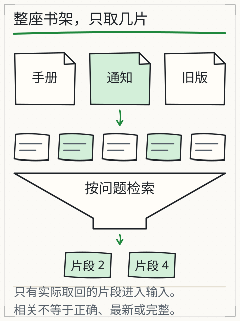

假设设备手册更新了：旧版写“闭馆前检查门窗”，新版增加“关闭饮水机电源”。如果助手只保存一段截断的文本，它可能永远引用旧版，或者把两版拼成一句。你需要一条能回到具体文档、具体版本、具体片段的链路，而不是一个“知识库”黑箱。
本章把本地 Markdown/文本变成带稳定 ID、版本、哈希、权限和字符位置的片段，并实际执行更新、删除和权限检查。检索算法留到 C15；本章先保证“资料本身可追溯”。
先修检查：文件、哈希与片段
C11 已经能读写 UTF-8 文件；C13 已经能看到文档清单中的 id、version、readers。本章再加三个概念：
- 哈希：对文件字节做 SHA-256，得到固定长度摘要。文件改一个字节，摘要就变；它用来判断“当前文件还是不是清单里那一版”。
- 字符位置：片段记录在原文中的起止位置，便于回查。字符位置不是字节位置；中文一个字符通常占多个 UTF-8 字节。
- 稳定 ID：文档 ID 不随标题变化；片段 ID 由文档 ID、当前文件 SHA-256 的前 12 位和片段序号构成（示意：
station-log@4f2c9a1b7e03#000），版本号单独记录在元数据里。文件内容一变，哈希和片段 ID 都会变，旧 ID 不应指向新内容。
如果“哈希”只是听说过，先做一个小实验：
import hashlib
print(hashlib.sha256("设备手册".encode("utf-8")).hexdigest())
改一个字再算，摘要完全不同。哈希不能告诉你“哪一句改了”，只能告诉你“字节是否相同”；所以还要保留版本和原文片段。
用于版本核验的清单字段
一份固定了文件哈希的文档清单如下（下面是结构示意，省略号须换成实际摘要）：
{
"schema": "assistant-documents/1",
"documents": [
{
"id": "equipment-guide",
"path": "docs/equipment-guide.md",
"version": "2.1",
"readers": ["student", "staff"],
"sha256": "…64 位十六进制…"
},
{
"id": "station-log",
"path": "docs/station-log.md",
"version": "2026-10-30",
"readers": ["staff"],
"sha256": "…"
}
]
}
id：稳定、唯一、可读；不要用标题当 ID，标题会改。path：相对于清单所在目录的路径；必须限制在允许目录内，不能../../etc/passwd。version：人能读的版本；更新时递增或换日期，不能只改文件内容。readers：谁可以读；权限检查要在读取正文之前。sha256：锁定当前文件字节；清单与文件不一致时拒绝使用，而不是“自动更新哈希”把变化吞掉。
本课程示例目录由助手 owner 提供 station-log、equipment-guide、visitor-policy、closing-notice，另有教师材料 review-budget。不要假设它们的内容；先 inspect read。
助手允许省略 sha256：未填写时，它计算当前文件摘要并写入报告；填写时，它还核对文件是否与该摘要一致。仓库自带清单没有预填摘要，不能直接拿它练习“与已冻结版本比较”。本章校验程序要求摘要必填，用下面的副本完成练习。
在仓库根目录，把以下代码保存为 prepare_manifest.py 并执行 python prepare_manifest.py。它以课程资料维护者身份复制这五份教学文件，在新目录 c14-data 中固定当前字节的摘要；已有目录会报错，避免重跑时覆盖你改坏的样本。真实项目只能在确认来源和版本后做这一步，不能在校验失败后自动重建摘要。
import hashlib
import json
from pathlib import Path
source = Path("book/llm/examples/assistant")
target = Path("c14-data")
manifest = json.loads((source / "documents.json").read_text(encoding="utf-8"))
target.mkdir(exist_ok=False)
for doc in manifest["documents"]:
source_path = (source / doc["path"]).resolve()
source_path.relative_to(source.resolve())
destination = (target / doc["path"]).resolve()
destination.relative_to(target.resolve())
data = source_path.read_bytes()
destination.parent.mkdir(parents=True, exist_ok=True)
destination.write_bytes(data)
doc["sha256"] = hashlib.sha256(data).hexdigest()
(target / "documents.json").write_text(
json.dumps(manifest, ensure_ascii=False, indent=2) + "\n", encoding="utf-8"
)
print("已准备 c14-data/documents.json；原课程文件未改动。")
完整程序：校验清单与文件是否一致
下面程序只使用标准库。它读取清单，检查必填字段、路径越界、文件缺失、哈希不一致和重复 ID，并输出 JSON 报告。把它存成仓库根目录的 verify_manifest.py。这是资料维护者的文件盘点程序，会读取清单中所有文件的字节；它尚不实现按读者授权访问，不能直接作为面向用户的读取接口。
#!/usr/bin/env python3
"""校验文档清单与本地文件是否一致；不读取模型、不做检索。"""
from __future__ import annotations
import argparse
import hashlib
import json
import re
import sys
from pathlib import Path
REQUIRED = ("id", "path", "version", "readers", "sha256")
def sha256_file(path: Path) -> str:
digest = hashlib.sha256()
with path.open("rb") as handle:
for block in iter(lambda: handle.read(1 << 20), b""):
digest.update(block)
return digest.hexdigest()
def load_manifest(path: Path) -> list[dict]:
data = json.loads(path.read_text(encoding="utf-8"))
if not isinstance(data, dict) or data.get("schema") != "assistant-documents/1":
raise ValueError("schema 必须为 assistant-documents/1")
documents = data.get("documents")
if not isinstance(documents, list) or not documents:
raise ValueError("documents 必须是非空数组")
return documents
def main(argv: list[str] | None = None) -> int:
parser = argparse.ArgumentParser(description="校验本地文档清单")
parser.add_argument("manifest", help="documents.json 路径")
parser.add_argument("--root", default=".", help="允许读取的根目录；默认当前目录")
args = parser.parse_args(argv)
manifest_path = Path(args.manifest).resolve()
root = Path(args.root).resolve()
try:
documents = load_manifest(manifest_path)
except (OSError, ValueError, json.JSONDecodeError) as exc:
print(json.dumps({"status": "error", "error": "manifest-invalid", "detail": str(exc)}, ensure_ascii=False))
return 2
errors: list[dict] = []
seen: set[str] = set()
checked: list[dict] = []
for index, doc in enumerate(documents):
if not isinstance(doc, dict):
errors.append({"index": index, "error": "not-an-object"})
continue
missing = [key for key in REQUIRED if key not in doc]
if missing:
errors.append({"index": index, "error": "missing-fields", "fields": missing})
continue
doc_id = doc["id"]
if not isinstance(doc_id, str) or not doc_id.strip():
errors.append({"index": index, "error": "invalid-id"})
continue
if doc_id in seen:
errors.append({"id": doc_id, "error": "duplicate-id"})
seen.add(doc_id)
if not isinstance(doc["path"], str) or not doc["path"].strip() or Path(doc["path"]).is_absolute():
errors.append({"id": doc_id, "error": "invalid-relative-path"})
continue
if not isinstance(doc["version"], str) or not doc["version"].strip():
errors.append({"id": doc_id, "error": "invalid-version"})
continue
if not isinstance(doc["sha256"], str) or not re.fullmatch(r"[0-9a-fA-F]{64}", doc["sha256"]):
errors.append({"id": doc_id, "error": "invalid-sha256"})
continue
if not isinstance(doc["readers"], list) or not all(isinstance(x, str) for x in doc["readers"]):
errors.append({"id": doc_id, "error": "invalid-readers"})
continue
path = (manifest_path.parent / doc["path"]).resolve()
try:
path.relative_to(root)
except ValueError:
errors.append({"id": doc_id, "error": "path-outside-root", "path": str(path)})
continue
if not path.is_file():
errors.append({"id": doc_id, "error": "missing-file", "path": str(path)})
continue
actual = sha256_file(path)
if actual.lower() != str(doc["sha256"]).lower():
errors.append({
"id": doc_id,
"error": "sha256-mismatch",
"expected": doc["sha256"],
"actual": actual,
"hint": "确认文件是否更新；更新时同时改 version 和 sha256，不要静默改写清单",
})
continue
checked.append({"id": doc_id, "version": doc["version"], "sha256": actual, "readers": doc["readers"]})
report = {
"status": "ok" if not errors else "error",
"checked": checked,
"errors": errors,
}
print(json.dumps(report, ensure_ascii=False, indent=2))
return 0 if not errors else 3
if __name__ == "__main__":
sys.exit(main())
运行：
python verify_manifest.py c14-data/documents.json --root c14-data
预期 status 为 ok、checked 有五项、errors 为空，退出码为 0。路径统一相对清单目录解析；--root c14-data 再限制允许读取的范围。原课程清单没有必填摘要，直接传给这个程序会报 missing-fields；这与助手允许省略摘要的接口并不矛盾。
切块：边界比“固定 500 字”重要
假设手册有两节：
## 闭馆检查
关闭门窗，确认访客离场。关闭饮水机电源。
## 例外
若当晚有维护施工，保留主电源，由值班人员签字确认。
如果按固定 40 字硬切，第一块可能包含“关闭饮水机电源”，第二块只剩“若当晚有维护施工，保留主电源”，读者会把两条规则看成互相矛盾。切块应尽量沿标题和段落边界，并在片段元数据中保留：
chunk_id：例如equipment-guide@4f2c9a1b7e03#000（示意；实际是doc_id@sha256 前 12 位#三位序号）；版本1.0.0单独记录，不写进 ID；doc_id、version、sha256；start、end（在原文中的字符位置）；heading（所在小节）；text（片段原文）；readers（继承文档权限，或在文档内进一步收窄）。
固定长度切块不是错，但必须记录切割造成的语义断裂风险。C19 会专门诊断“检索没找对”是否由切块造成。
使用助手查看实际切块：
python book/llm/examples/assistant/assistant.py inspect chunk \
--docs book/llm/examples/assistant/documents.json \
--reader student \
--chunk-chars 480 \
--chunk-overlap 80
命令按 README 的公开接口输出当前 --reader 可见文档的片段：--chunk-chars 480、--chunk-overlap 80。review-budget 这类无权限文档不会出现——权限过滤发生在读取和切块之前，未授权正文不会进入内存，也不会进入片段列表。每个片段给出 chunk_id（形如 station-log@<sha256 前 12 位>#000，序号补三位）、原文、start/end、version 与 sha256。不要用版本号拼 chunk_id；重点是看到可回查的原文与位置，而不是只看到一段摘要。
更新与删除：不能让旧片段“自然残留”
更新流程应显式：
- 修改文件内容；
- 改
version（例如2.1→2.2）； - 重新计算
sha256； - 重新切块，生成新的
chunk_id； - 让检索只使用当前版本的索引；旧版本片段可以留作审计，但不能被当作现行规则返回。
删除同理：从当前清单移除文档，再重建当前索引；审计副本另存。助手要求 readers 非空，把它清空会使清单校验失败，不能当作删除接口。不要让旧索引继续命中已撤回的材料。C15 的检索如果返回了清单中不存在的 doc_id，应视为错误，而不是“历史遗留”。
权限：先检查，再读取
--reader 必须在读取正文之前检查。一个常见错误是先检索全部文档，再把无权限片段从最终答案里删掉；此时模型已经看到了机密内容，删除输出不能撤销泄露。正确顺序是：
- 按
reader过滤清单； - 只对可见文档读取/切块；
- 检索只在可见集合内进行；
- 报告记录
reader和可见文档 ID。
如果你需要让读者看到“有这份材料但无权访问”，可以返回 unauthorized 和文档 ID，但不要返回正文。权限失败要通过授权或提供公开替代材料解决，不能修改 readers 来绕过。
改一个条件：文件改了，清单没改
把 c14-data/docs 中某份文档末尾加一个字，不改副本清单中的 version/sha256，再运行校验程序。预期 sha256-mismatch，退出码为 3，且该文档不进入 checked。这时不要直接“帮它更新哈希”；先确认改动是否有意、是否需要新版本、哪些引用会受影响。若这是正式交付，旧版本报告必须标记过期。
再改一个条件：把 path 改成 ../../outside.txt。校验程序应报 path-outside-root，即使文件真实存在。路径越界是权限/安全问题，不是“路径写错”那么简单。
图与实验
下图把整座书架筛成少量片段：检索只应拿到当前读者可见、当前版本、可回查的片段，而不是把整个资料库塞进上下文。

旧的 X07 检索与生成的分工 实验可以改查询、切块大小和取回数量，观察实际进入上下文的片段。它使用预置教学资料，不是你的文档；用它练“切块如何改变命中”，再回到本章的真实清单。
项目增量
在你的项目中新增：
docs/ # 你拥有版权的 Markdown/文本
documents.json # id,path,version,readers,sha256
verify_manifest.py
out/manifest-check.json
至少准备两版同一文档（旧版/新版）和一份无权限文档。保存一次校验输出，记录你如何更新版本、如何让旧片段失效。
独立作业
- 为三份文档写清单，计算正确哈希；运行校验程序并保存输出。故意改一个字节，确认报告
sha256-mismatch。 - 设计切块规则（按标题/段落/固定长度+重叠），从实际输出抄写至少三个
chunk_id（doc@<sha12>#NNN，不要用版本号编造），并解释一个可能被切断的语义边界。 - 增加
--reader参数到校验程序，输出该读者可见的文档；无权限文档不得出现在可见列表的正文中。 - 更新一份文档到新版本，列出需要同步修改的字段和会失效的旧
chunk_id；不要只改文件内容。 - 解释为什么“先检索全部、再删无权限结果”不安全；用一句话说明正确顺序。
答案与核对依据见 C14 答案。
来源与限制
清单字段和助手命令来自 book/llm/examples/assistant/README.md 与 --help 的实际接口；示例文档由课程提供，内容与大小以实际文件为准。SHA-256 只能校验字节一致性，不证明内容真实、合法或最新；版本语义由维护者定义。切块程序与哈希校验程序为课程自建，不依赖外部服务；真实向量索引、并发更新和跨文档权限继承仍需在你的项目中实测。